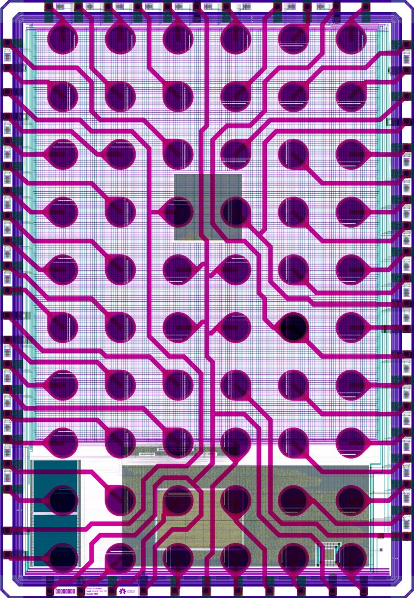

Anatomy of a Die: Core, Pad Ring & Seal Ring
Look at a finished die from above and the same few regions appear on almost every chip: a seal ring at the edge, a ring of pad cells, and a core filled with standard-cell rows and larger blocks. Caravel, the SKY130 shuttle harness, is the worked example.
What you will learn
- Locate the seal ring, pad ring, core, macros and power grid on a die.
- Describe what a pad cell contains and why pad cells are so much larger than logic cells.
- Use Caravel’s published dimensions to reason about core area and pad count.
1. Four regions, from the edge inward
Most dies share the same arrangement. At the very edge is the seal ring (lesson 2). Just inside it is the pad ring (also I/O ring or padframe): a ring of pad cells that connect the die to the package, with corner cells that turn the ring’s supply buses. Inside the ring is the core, where the circuit lives. The core holds rows of standard cells (lesson 13), larger pre-designed blocks called macros — memories, processors, analog blocks — and the power grid that feeds them all (lesson 14).
2. The real layout

3. Pads: where the die meets the package
A pad is a large square of top metal (met5 in SKY130) with the passivation removed above it — the “glass cut” in the stack diagram (lesson 3) — so that a bond wire or solder bump can attach. Around each pad is a pad cell that makes the connection usable: an output driver strong enough to drive a board trace, an input receiver, translation between the I/O supply and the core supply, and ESD (electrostatic discharge) protection. A static spark from a finger or a machine can carry amperes for nanoseconds; the ESD devices steer that current around the thin-oxide core transistors, which would otherwise be destroyed (lesson 65).
top_gpiov2 LEF (lesson 64, lesson 67). The internal regions are a teaching floorplan, not the cell’s real layout.Pad cells are big because they handle large currents and higher voltages. The SKY130
general-purpose pad cell, sky130_fd_io__top_gpiov2, is 80 × 200 µm = 16,000 µm²: the area of about
4,260 inv_1 cells. A GPIO (general-purpose input/output) pad can be configured as an
input, an output or both, with options such as pull-up resistors. Caravel gives the user project 38 of them,
named mprj_io[0] to mprj_io[37].
4. The core: rows, macros and the power grid
Inside the ring, synthesized logic is placed in rows of standard cells, each row one cell high (2.72 µm in the HD library). Macros are placed as single blocks; the standard-cell rows flow around them. Supply current arrives from the power pads, travels along the ring’s buses, and enters the core through power rings and a mesh of metal straps that reach every row (lesson 14, lesson 68).
Caravel delivers four supply domains to the user area: two 1.8 V digital supplies (vccd1,
vccd2) and two 3.3 V analog supplies (vdda1, vdda2), each with its own ground.
The pad ring and the management area have supplies of their own. A die normally has several supplies, not one
VDD (lesson 64).
5. Worked example: how big is the user area?
The user area is 2.92 × 3.52 mm = 10.28 mm². An HD placement site is 0.46 µm wide and one row is 2.72 µm tall. Along the width: 2920 / 0.46 = 6,347 whole sites per row. Along the height: 3520 / 2.72 = 1,294 whole rows. That is about 8.2 million sites. A real design fills only part of them, because routing, power straps, clock buffers, taps and fill all need room.
6. Pad-limited or core-limited?
The padframe also limits how many connections fit. Take Caravel’s padframe, 3,588 × 5,188 µm, and subtract a 200 µm corner cell at each end of each side. The usable edge length is 2 × (3588 − 400) + 2 × (5188 − 400) = 15,952 µm. At 80 µm per GPIO cell that is at most 199 pad cells, before any power pads, fillers or spacing rules. A die whose pad count needs more perimeter than its logic needs area is pad-limited: it is larger than its circuit requires. One whose logic sets the size is core-limited. Area-array packages, which place bumps over the whole die, are one way out of a pad-limited design (lesson 6).
Check your understanding — why is the GPIO cell 80 × 200 µm when its PAD access rectangle is only about 21.5 µm square?
The pad cell holds much more than the landing area: ESD devices sized for ampere-level discharge currents, output transistors strong enough to drive board traces, input receivers, level translation between supply domains, and several supply buses that run through every cell of the ring.
Check your understanding — how many 80 µm GPIO cells fit along the Caravel padframe, and would 250 fit?
At most 199: 15,952 µm of usable edge divided by 80 µm, before any power pads, fillers or spacing. 250 would not fit, so a design needing that many pads would be pad-limited at this die size, or would need an area-array package.
Key takeaways
- From the edge inward: seal ring, pad ring (with corner cells), then the core with standard-cell rows, macros and the power grid.
- A pad is top-metal with the passivation opened; a pad cell adds drivers, receivers, level translation and ESD protection.
- Caravel: 3.60 × 5.20 mm die, 3.588 × 5.188 mm padframe, 2920 × 3520 µm user area, 38 user GPIOs, four user supply domains.
- The GPIO cell is 80 × 200 µm, the area of about 4,260 inv_1 cells.
- Perimeter limits pad count; a pad-limited die is larger than its logic requires.
Sources & scope
Written 9 November 2026. Caravel dimensions are from its drawings and design files; pad-cell dimensions are from the pinned sky130_fd_io LEF used in the I/O lessons. Internal floorplans are approximate teaching drawings.
- Efabless Caravel harness repository (Apache-2.0) — layout image (Figure 2) and floorplan
- Caravel harness documentation — management SoC, GPIO and power domains
- Caravel user_project_wrapper DEF — DIEAREA 2920 × 3520 µm
- UNIC-CASS 2024 slides: Efabless Caravel — die and padframe dimensions
- SKY130 I/O library (sky130_fd_io) — top_gpiov2 outline and PAD pin
All 84 lessons
- Part I · Foundations: the physical chip and its vocabulary
- 1. What Is a Chip? Board, Package & Die
- 2. The Silicon Wafer: From Crystal to Dies
- 3. How a Die Is Built: SKY130 Layers & Lithography
- 4. The MOSFET: SKY130’s Transistor
- 5. Anatomy of a Die: Core, Pad Ring & Seal Ring
- 6. Packages: Wire Bonds, Flip-Chip, QFN & WLCSP
- 7. The PCB and the Path to the Transistor
- 8. The Design Flow and Its Files: RTL to GDS
- 9. Signals Primer: DC, AC, RMS, Decibels & the FFT
- Part II · Transistors to logic gates
- 10. Logic Gates at the Transistor Level
- 11. Drive Strength & Transistor Sizing
- 12. More Gate Topologies
- Part III · Standard-cell layout
- 13. Site Rows & Standard Cell Placement
- 14. The Power Grid & Routing Grids
- 15. Metal Layers, Vias & the Stackup
- 16. Inside a Standard Cell's Layout
- 17. The Cell Template: Tracks, Sites & Edges
- 18. Anatomy of a Bigger Cell
- 19. Pin Access & Porosity
- 20. A Flip-Flop From the Inside
- Part IV · Loads, timing and interconnect
- 21. Loads
- 22. Liberty Files: What a Cell Library Records
- 23. Reading Liberty Timing Tables
- 24. Standard-Cell Characterization: How Liberty Is Made
- 25. Timing
- 26. Setup and Hold
- 27. Latch-Based Design & Time Borrowing
- 28. Routing Resistance and Parasitics
- 29. Delay from Physics: Transistor, Contact, Via, Wire & Gate
- 30. Electromigration
- 31. Reliability & Aging: HCI, BTI, TDDB & Self-Heating
- 32. DFM, Variation & Yield: A Digital View
- Part V · Digital implementation
- 33. RTL Patterns: FSMs, Handshakes, Resets & Lint
- 34. RTL, Synthesis & Timing Constraints
- 35. The Clock Tree
- 36. Clock Generation: Oscillators, DCO, PLL & Jitter
- 37. Clock Gating & Power States
- 38. Power Analysis & Low-Power Cells
- 39. Clock-Domain Crossings & Reset
- 40. Scan
- 41. DFT Beyond Scan: Faults, ATPG, BIST and JTAG
- 42. A Timed Logic Path: Registers, Clocks, Scan & Speed/Power
- 43. Memories: SRAM, OpenRAM and DFFRAM
- 44. Datapath & Arithmetic
- 45. Multi-Corner STA: OCV, CRPR & Hold Cells
- 46. Functional Verification: Testbenches, Assertions, Formal & Gate-Level Sim
- Part VI · Physical cells and the floorplan
- 47. Fill Cells
- 48. Well Taps and Latch-up
- 49. Endcaps
- 50. Tie Cells
- 51. Antenna Diodes
- 52. Decap Cells
- 53. Spare Cells and ECO
- 54. Level Shifters
- 55. Floorplan
- 56. Caravel Integration: The User Project Wrapper
- 57. Hierarchical Design, Abstracts & ECO
- 58. Placement: Global, Legalization & Detailed
- 59. Routing & Timing Closure
- 60. Digital Signal Integrity: Crosstalk Delay & Glitch
- 61. Metal Fill and Cell Fill
- 62. Physical Verification Signoff
- 63. Power-Integrity Signoff: Static IR, Dynamic IR & EM
- Part VII · The chip boundary: I/O, ESD and package
- 64. The I/O Ring
- 65. ESD and Clamps
- 66. I/O Fill
- 67. RDL Routing
- 68. I/O Power and IR Drop
- 69. Power, Package & Thermal Coupling
- 70. Tapeout, MPW & Tiny Tapeout
- 71. Post-Silicon Bring-Up, Test & Characterization
- Part VIII · Analog circuits
- 72. Analog Bias, gm & Headroom
- 73. Feedback, Loading & Stability
- 74. Differential Pairs, Common Mode & CMFB
- 75. Noise, Mismatch & Variation
- 76. References, Temperature & Startup
- 77. Comparators & Power Management: StrongARM, LDO & POR
- 78. Matching, Layout & Extracted Netlists
- Part IX · Mixed-signal: sampling, conversion and verification
- 79. Sampling, Aliasing & Settling
- 80. ADC & DAC Interfaces
- 81. FFT, Noise & Distortion Measurements
- 82. Calibration, Trimming & Testability
- 83. Crosstalk, Return Paths & Isolation
- 84. Mixed-Signal Verification & Bring-Up
Updated 11 November 2026 · 84 lessons · Offline lessons, diagrams, source code and recorded results · External references require internet access.